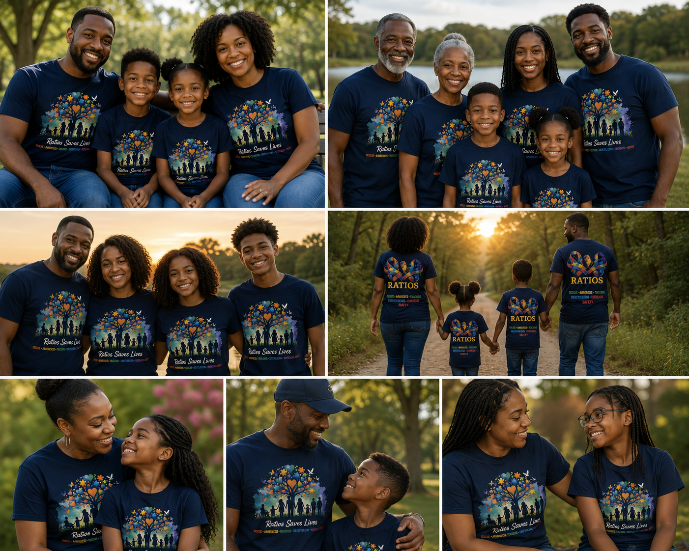

RATIOS is a St. Louis-based nonprofit created to help vulnerable individuals be identified, protected, and safely reunited with loved ones.
RATIOS was founded by Desirae Grissom, a wife, mother, nursing student, community advocate, and nonprofit founder. Her work is rooted in compassion, patient-centered care, disability advocacy, and the belief that every person deserves to be treated as one of one.
The idea for RATIOS grew after Desirae’s husband found a non-verbal adult with Down syndrome wandering alone. That experience became the spark for a program focused on identification, safety planning, caregiver education, and rescue awareness.
RATIOS has been developed over approximately two years and was formally organized in 2026 to serve the Greater St. Louis Region.

To provide identification resources, recovery tools, advocacy, caregiver training, and community education for individuals with developmental, cognitive, intellectual, and communication disabilities who are at risk of wandering, elopement, abandonment, or unsafe separation from their support systems.
A community where vulnerable individuals are recognized, protected, and safely reunited without delay, judgment, or confusion.
Dignity, urgency, inclusion, family support, safety, education, and compassionate response.
Families, caregivers, schools, first responders, law enforcement, healthcare partners, and community organizations.